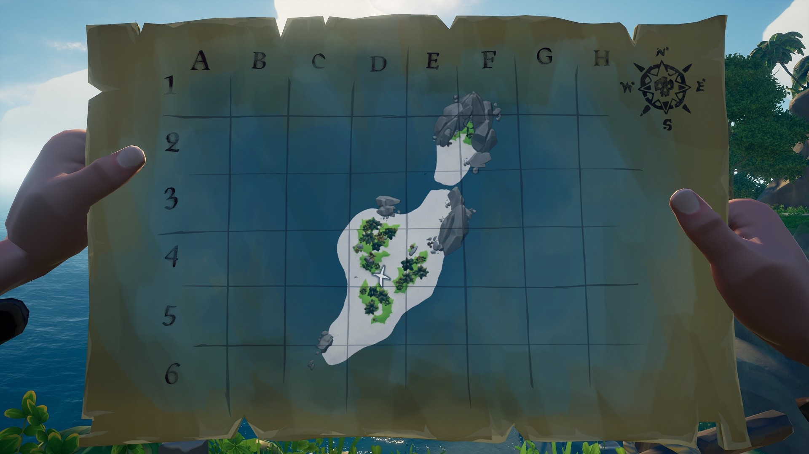
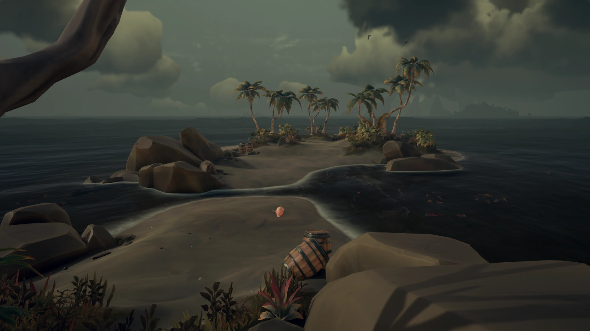

Страница 1


Бедственное положение Грабителя
Бедственное положение Грабителя - это небольшой остров, расположенный в районе Диких земель с координатами Q-6.
Остров состоит в основном из песка и скал, с редкими участками растительности.
Особенности измененного источника
Особенности острова:
Свиньи
5 Бочек с ресурсами